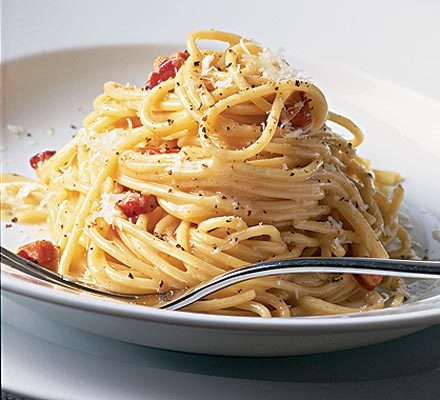

Spaghetti Carbonara
A classic Italian pasta dish with bacon and eggs
- 1 lb spaghetti
- 6 oz bacon, diced
- 4 garlic cloves, minced
- 1/2 cup grated parmesan cheese
- 1/2 cup heavy cream
- Salt and pepper, to taste
- 4 egg yolks
Ingredients
- Bring a large pot of salted water to a boil. Cook the spaghetti according to package instructions until al dente.
- While the spaghetti is cooking, fry the bacon in a large skillet over medium heat until crispy. Remove the bacon from the skillet with a slotted spoon and set aside on a paper towel to drain.
- Add the garlic to the bacon fat in the skillet and cook until fragrant, about 1 minute.
- In a small bowl, whisk together the egg yolks, parmesan cheese, and heavy cream.
- When the spaghetti is done, drain it and add it to the skillet with the garlic. Toss the spaghetti with the garlic until well-coated.
- Add the egg mixture to the skillet and toss everything together until the eggs are cooked and the sauce is creamy. Season with salt and pepper to taste.
- Divide the spaghetti into bowls and top with the crispy bacon.
Instructions
| Calories | Fat | Protein | Carbs |
|---|---|---|---|
| 630 | 32g | 28g | 58g |